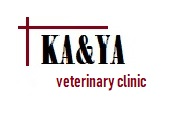
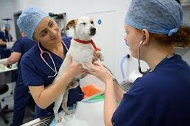
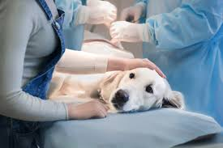
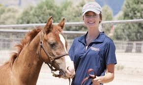

Home Page |
Blog
| Our Services |
Our Team |
Gallery |
Contact Us |
Register
Search
In this page we added a few links of some articles and web pages that would help you.
A veterinarian is a medical professional who protects the health and
well-being of both animals and people. They diagnose and control animal diseases and treat sick and injured animals.
They also advise owners on proper care of their pets and livestock.
Veterinarians provide a wide range of services in private practice, teaching, research,
government service, public health, military service,
private industry, and other areas.

When taking the veterinarian's oath, a doctor solemnly swears
to use his or her scientific knowledge and skills "for the benefit of society, through the protection of animal health,
the relief of animal suffering, the conservation of animal resources, the promotion of public health,
and the advancement of medical knowledge".
You can click on the name of the article to go to it's page.
Veterinary Medicine and Science Journal
How to pet your cat
How to pet your dog
Pet birds: Do's and Dont's

Veterinarians also work in the area of public health.
They help to prevent and control animal and human diseases and promote good health. As epidemiologists they investigate animal and human disease
outbreaks such as food-borne illness, influenza, plague, rabies, AIDS, and encephalitis. They evaluate the safety of food processing plants, restaurants,
and water supplies. Veterinarians in environmental health programs study and evaluate the effects
of various pesticides, industrial pollutants, and other contaminants on people
as well as on animals.

As opposed to human medicine, general practice veterinarians
greatly out-number veterinary specialists. Most veterinary specialists work at a veterinary school, or at
a referral centre in large cities. As opposed to human medicine, where each organ system has its own medical and surgical
specialties, veterinarians often combine both the surgical and medical aspect of an organ system
into one field. The specialties in veterinary medicine often encompass several medical and surgical specialties that are found in human medicine.
Within each veterinary specialty, one will often find a separation of large animal medicine
from small animal medicine. Some veterinary specialties are evolving, some are limited only in the
teaching universities, and some are practiced only in the field.